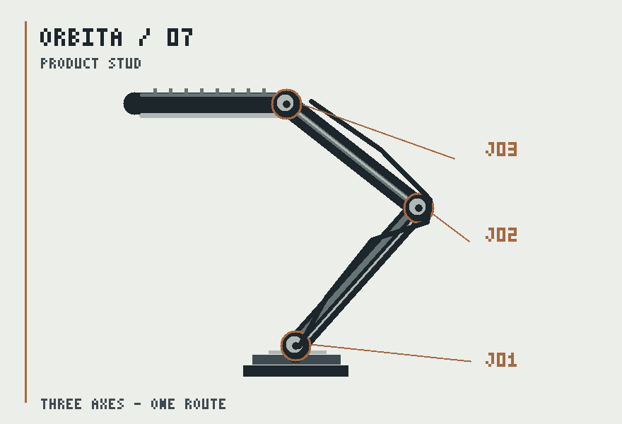
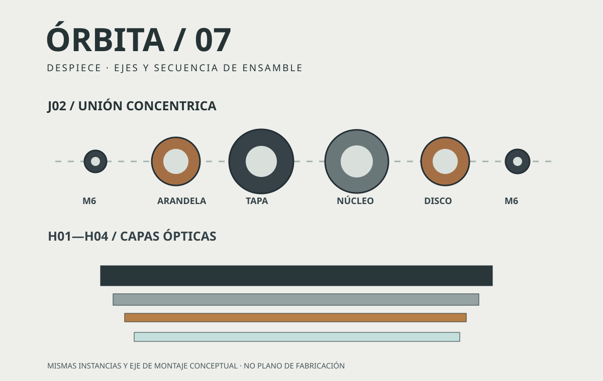

PROMETEO · ESTUDIO DE IMÁGENES / W003-04
ÓRBITA / 07
Lámpara de inspección articulada. Una geometría, tres ejes, un recorrido de cable y un despiece que conserva sus piezas.

03Ejes y conjuntos de fijación
02Brazos de sección doble
01Cable de ruta exterior

El interior también importa.
J02 / Fricción Núcleo, arandelas, tapas y tornillos comparten el centro de articulación.
H01—H08 / Óptica Carcasa, disipador, placa LED, difusor y cierres mantienen IDs y dimensiones únicas.
C01 / Conductor Ruta exterior con holguras previstas; el radio de curvatura debe verificarse en prototipo.